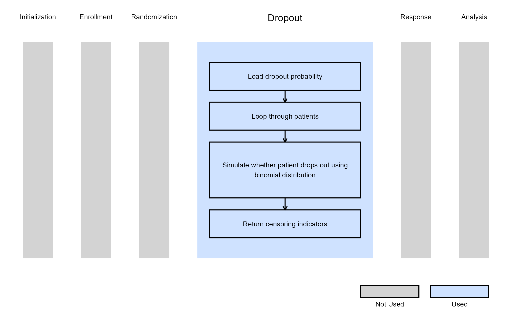
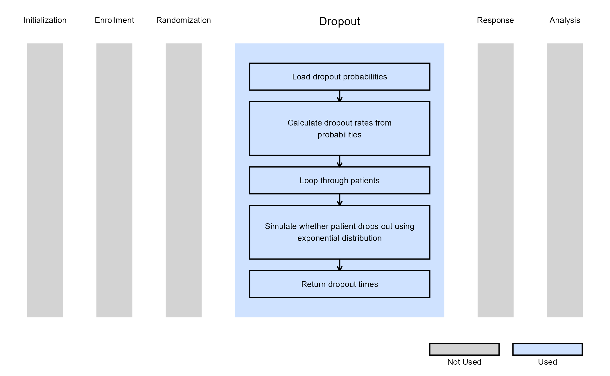

2-Arm, Single Endpoint - Simulate Patient Dropout
Shubham Lahoti
October 31, 2025
2ArmPatientDropout.RmdThis example is related to the Integration Point: Dropout. Click the link for setup instructions, variable details, and additional information about this integration point.
- Study objective: Two Arm Confirmatory
- Number of endpoints: Single Endpoint
-
Endpoint type:
- Continuous or Binary Outcome for Example 1
- Time-to-Event Outcome for Example 2
- Continuous Outcome with Repeated Measures for Example 3
- Task: Any
Introduction
The following examples illustrate how to customize the dropout distribution in East Horizon or East using R functions. Patients may drop out of a trial for various reasons, including safety concerns, treatment burden, or non-trial-related factors. In some cases, dropout rates can reach 30%, particularly if the drug has adverse side effects. Incorporating dropout probabilities or hazard rates is crucial during data generation and can significantly impact subsequent analysis. In all examples, we assume a trial design consisting of a control group and an experimental treatment.
Once CyneRgy is installed, you can load this example in RStudio with the following command:
CyneRgy::RunExample( "2ArmPatientDropout" )Running the command above will load the RStudio project in RStudio.
RStudio Project File: 2ArmPatientDropout.Rproj
In the R directory of this example you will find the following R files:
GenerateCensoringUsingBinomialProportion.R - Contains a function named GenerateCensoringUsingBinomialProportion to demonstrate the R code necessary for Example 1 as described below.
GenerateDropoutTimeForSurvival.R - Contains a function named GenerateDropoutTimeForSurvival to demonstrate the R code necessary for Example 2 as described below.
GenerateDropoutTimeForRM - Contains a function named GenerateDropoutTimeForRM to demonstrate the R code necessary for Example 3 as described below.
Example 1 - Dropout Using Binomial Proportion (Continuous or Binary Outcome)
This example is related to this R file: GenerateCensoringUsingBinomialProportion.R
The R function GenerateCensoringUsingBinomialProportion
generates the censoring indicator using the dropout probability
specified in East Horizon (ProbDrop in the script,
Probability of Dropout in East Horizon) for continuous or
binary outcome. This function applies the binomial distribution using
the rbinom() function in R to determine dropout status. In
this case, the dropout probability is the same across both treatment
groups, but this can be customized using user-defined parameters.
This function does not use any user-defined parameters, but uses parameters specified in East Horizon. Refer to the table below for more information.
| Name of the parameter in East Horizon | Where to find the parameter in East Horizon | Name of the variable in the R script |
|---|---|---|
| Probability of Dropout | Response Card |
Steps:
- Let
be the dropout probability.
- Draw a random sample from a Bernoulli distribution with
,
i.e.,
,
of size
.
- The generated sample serves as a censoring indicator:
-
1 indicates a patient who completes the trial (does
not drop out).
- 0 indicates a patient who drops out (non-completer).
-
1 indicates a patient who completes the trial (does
not drop out).
The figure below illustrates where this example fits within the R integration points of Cytel products, accompanied by a flowchart outlining the general steps performed by the R code.

Example 2 - Dropout Time For Time-to-Event Outcome
This example is related to this R file: GenerateDropoutTimeForSurvival.R
The function GenerateDropoutTimeForSurvival generates dropout times for a two-arm time-to-event design. In this case, dropout information can be specified separately for each arm (in East Horizon, Control and Treatment in the Dropout Rate tab), and dropout times are drawn from an exponential distribution accordingly. The number of periods is fixed at 1.
This function does not use any user-defined parameters, but uses parameters specified in East Horizon. Refer to the table below for more information.
| Name of the parameter in East Horizon | Where to find the parameter in East Horizon | Name of the variable in the R script |
|---|---|---|
| Probability of Dropout: Control | Response Card, Dropout Rate tab | |
| Probability of Dropout: Treatment | Response Card, Dropout Rate tab |
The figure below illustrates where this example fits within the R integration points of Cytel products, accompanied by a flowchart outlining the general steps performed by the R code.
Example 3 - Dropout Time for Repeated Measures
This example is related to this R file: GenerateDropoutTimeForRM.R
The function GenerateDropoutTimeForRM generates dropout times for a continuous outcome with repeated measures design. In this case, dropout information can be specified separately for each arm (in East Horizon, Control and Treatment in the Dropout Rate tab), and dropout times are drawn from an exponential distribution accordingly. The Input Method in East Horizon has to be set to Cumulative Probability of Dropout by Time.
This function does not use any user-defined parameters, but uses parameters specified in East Horizon. Refer to the table below for more information.
| Name of the parameter in East Horizon | Where to find the parameter in East Horizon | Name of the variable in the R script |
|---|---|---|
| Probability of Dropout: Control | Response Card, Dropout Rate tab | |
| Probability of Dropout: Treatment | Response Card, Dropout Rate tab |
The figure below illustrates where this example fits within the R integration points of Cytel products, accompanied by a flowchart outlining the general steps performed by the R code.
